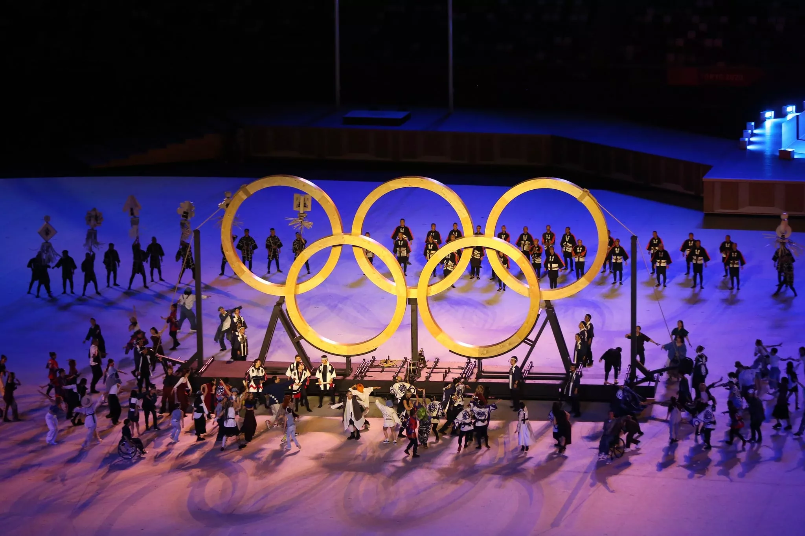

As OlimpÃadas são o maior evento esportivo do mundo, no qual paÃses dos cinco continentes se reúnem para competir em diversas modalidades. Acontecem a cada quatro anos e são divididos entre as edições de verão e de inverno. Atletas com deficiência disputam as chamadas ParalimpÃadas.
A promoção da paz, a integração e a união entre os paÃses compõem o objetivo principal dos Jogos OlÃmpicos. De acordo com o Estatuto OlÃmpico, a intenção é garantir o desenvolvimento harmonioso da humanidade por meio da prática esportiva.
As OlimpÃadas surgiram na Grécia Antiga, por volta de 776 a. C., na cidade de OlÃmpia.
Os Jogos OlÃmpicos da Antiguidade estavam associados a rituais religiosos e prestavam homenagens a deuses gregos, como Zeus.
Após o fim das OlimpÃadas antigas, em 393 d.C., os jogos voltariam a ocorrer somente 1503 anos depois.
O francês Barão de Coubertin iniciou as OlimpÃadas modernas, no ano de 1896.
"As ParalimpÃadas são as competições olÃmpicas disputadas por pessoas com algum tipo de deficiência.
"Os Jogos OlÃmpicos são divididos em duas edições, uma de verão e a outra de inverno, que ocorrem em um intervalo de dois anos.
Atletas Brasileiros e sua modalidades
Ao total são 37 modalidaes que o Brasil teve oportunidades para ganhar Ouro
Ao total são 291 atletas brasileiros!

Top três paÃses que ficaram em destaques nas olimpÃadas
- Eua com 40🥇 44🥈 42🥉 No total 126 medalhas.
- China com 40🥇27🥈 24🥉 No total 91 medalhas
- Japão 20🥇 12🥈 13🥉 No total de 45 medalhas